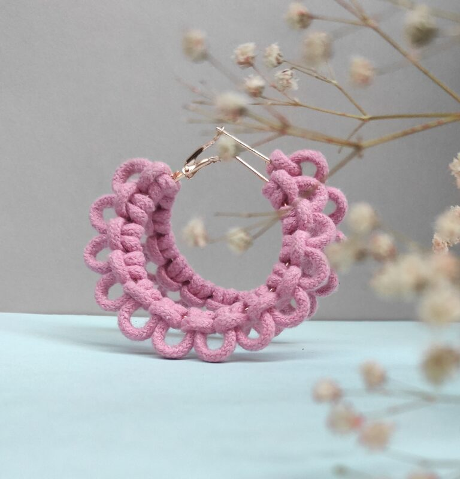

How to Clean & Care for Macrame: A Complete Guide
Wondering how to clean macrame wall hangings, earrings, and bags? From gentle dusting techniques to spot-cleaning stubborn stains, here are our tried-and-tested macrame care tips to keep your handcrafted pieces looking beautiful for years.
Read the guide